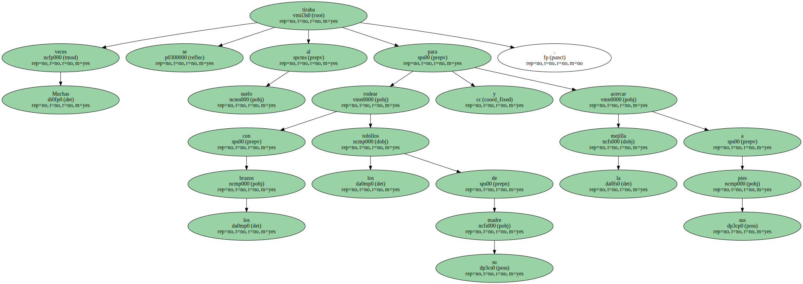
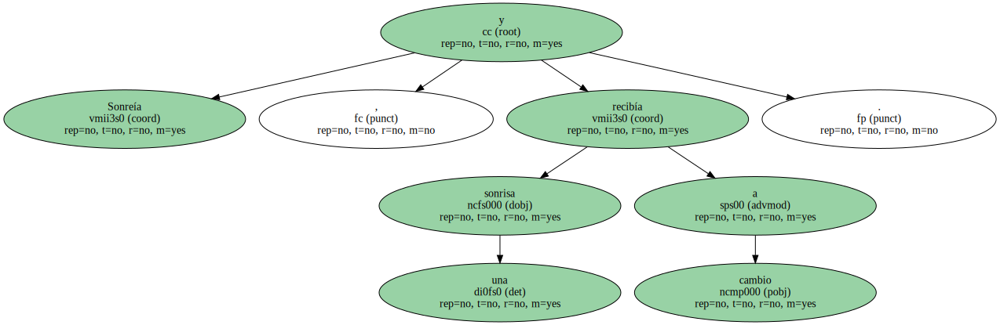
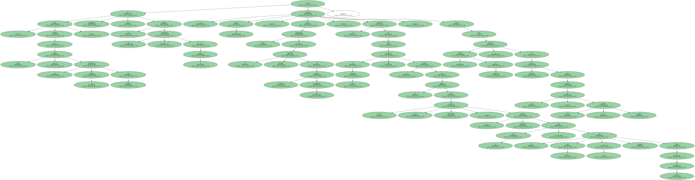
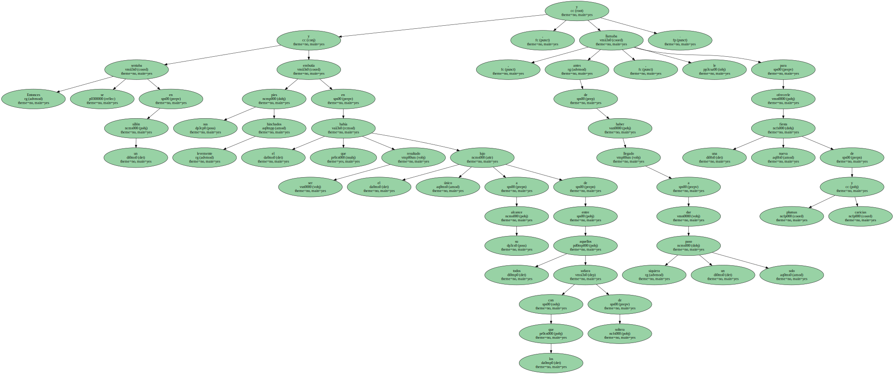
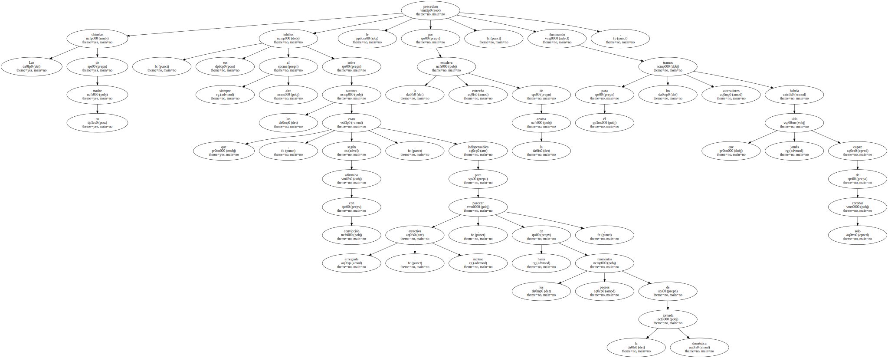

Muchas veces se tiraba al suelo para rodear con los brazos los tobillos de su madre y acercar la mejilla a sus pies.
Entonces movía la cabeza lentamente y disfrutaba de la tenue caricia que dibujaba aquella pluma casi invisible cuando se decidía a resbalar sobre su piel.

Sonreía , y recibía una sonrisa a cambio.
Ella , cómplice en aquel juego inocente que su marido desaprobaba con energía , iba recogiendo luego las plumas que se desprendían a su paso y las guardaba para él , para compensarle quizá de la previsible extinción del pequeño placer que compartían , consciente ya de que en poco tiempo sólo quedaría el recuerdo de las plumas sobre una sucia franja desmochada , la degradada frontera entre su piel y esa piel tan fina y arrugada , teñida de azul celeste , hasta que el cambio de estación se encarnara en pretexto suficiente para estrenar otro par , siempre el mismo modelo.
Entonces se sentaba en un sillón y embutía sus pies levemente hinchados en el que había resultado ser el único lujo a su alcance de entre todos aquellos con los que soñara de soltera , y , antes de haber llegado a dar siquiera un solo paso , le llamaba para ofrecerle una nueva fiesta de plumas y caricias.
Las chinelas de su madre , sus tobillos siempre al aire sobre los tacones que , según afirmaba con convicción , eran indispensables para parecer arreglada , atractiva incluso , hasta en los peores momentos de la jornada doméstica , le precedían por la estrecha escalera de la azotea , iluminando para él los aterradores tramos que jamás habría sido capaz de coronar solo.
